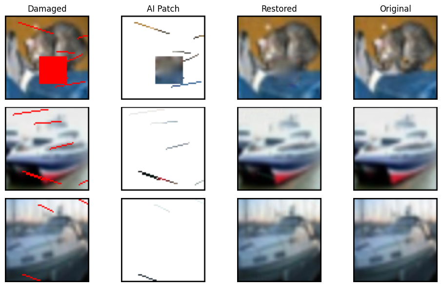

Simple Art Restoration with U-Net#
import torch
import torch.nn as nn
import torch.optim as optim
import torchvision.transforms as transforms
import torchvision.datasets as datasets
from torch.utils.data import DataLoader, Dataset
import matplotlib.pyplot as plt
import matplotlib.patches as patches
import numpy as np
import random
# Step 1: Define a Tiny U-Net
class DoubleConv(nn.Module):
def __init__(self, in_channels, out_channels):
super().__init__()
self.conv = nn.Sequential(
nn.Conv2d(in_channels, out_channels, 3, padding=1),
nn.ReLU(inplace=True),
nn.Conv2d(out_channels, out_channels, 3, padding=1),
nn.ReLU(inplace=True)
)
def forward(self, x):
return self.conv(x)
class UNet(nn.Module):
def __init__(self, in_channels=3, out_channels=3): # [64, 64, 3]
super().__init__()
self.down1 = DoubleConv(in_channels, 64) # [64, 64, 64]
self.pool1 = nn.MaxPool2d(2) # [32, 32, 64]
self.down2 = DoubleConv(64, 128) # [32, 32, 128]
self.pool2 = nn.MaxPool2d(2) # [16, 16, 128]
self.bottleneck = DoubleConv(128, 256) # [16, 16, 256]
self.up2 = nn.ConvTranspose2d(256, 128, 2, stride=2) # [32, 32, 128 + 128]
self.dec2 = DoubleConv(256, 128) # [32, 32, 128]
self.up1 = nn.ConvTranspose2d(128, 64, 2, stride=2) # [64, 64, 64 + 64]
self.dec1 = DoubleConv(128, 64) # [64, 64, 64]
self.final = nn.Conv2d(64, out_channels, 1) # [64, 64, 3]
def forward(self, x):
# Encoder: downsampling path (extract features, lose some detail)
d1 = self.down1(x)
p1 = self.pool1(d1)
d2 = self.down2(p1)
p2 = self.pool2(d2)
# Bottleneck: compressed global representation
bn = self.bottleneck(p2)
# Decoder: upsampling path (reconstruct image)
u2 = self.up2(bn)
cat2 = torch.cat([u2, d2], dim=1) # Skip Connection: bring back mid-level details
d2 = self.dec2(cat2)
u1 = self.up1(d2)
cat1 = torch.cat([u1, d1], dim=1) # Skip Connection: bring back fine details (edges, brushstrokes)
d1 = self.dec1(cat1)
return self.final(d1) # Output: restored image
# Step 2: Prepare the Dataset
class DamagedDataset(Dataset):
def __init__(self, train=True):
transform = transforms.Compose([
transforms.Resize((64, 64)),
transforms.ToTensor()
])
self.data = datasets.CIFAR10(root="./data", train=train,
transform=transform, download=True)
def add_damage(self, img):
img = img.clone()
mask = torch.zeros_like(img)
C, H, W = img.shape
# Block damage
if random.random() > 0.5:
block_size = random.randint(12, 24)
x = random.randint(0, W - block_size)
y = random.randint(0, H - block_size)
img[:, y:y+block_size, x:x+block_size] = 0
img[0, y:y+block_size, x:x+block_size] = 1
img[1, y:y+block_size, x:x+block_size] = 0
img[2, y:y+block_size, x:x+block_size] = 0
mask[:, y:y+block_size, x:x+block_size] = 1
# Streaks / scratches
if random.random() > 0.5:
num_streaks = random.randint(3, 7)
for _ in range(num_streaks):
x1, y1 = random.randint(0, W-1), random.randint(0, H-1)
length = random.randint(10, 30)
angle = random.uniform(-0.5, 0.5)
for i in range(length):
xi = int(x1 + i)
yi = int(y1 + i*angle)
if 0 <= xi < W and 0 <= yi < H:
img[:, yi, xi] = 0
img[0, yi, xi] = 1
img[1, yi, xi] = 0
img[2, yi, xi] = 0
mask[:, yi, xi] = 1
return img, mask
def __len__(self):
return len(self.data)
def __getitem__(self, idx):
clean, _ = self.data[idx]
damaged, mask = self.add_damage(clean)
return damaged, clean, mask
train_dataset = DamagedDataset(train=True)
train_loader = DataLoader(train_dataset, batch_size=32, shuffle=True)
100%|██████████| 170M/170M [00:06<00:00, 27.8MB/s]
# Step 3: Training
device = torch.device("cuda" if torch.cuda.is_available() else "cpu")
model = UNet().to(device)
criterion = nn.MSELoss()
optimizer = optim.Adam(model.parameters(), lr=1e-3)
print("Training started...")
for epoch in range(3):
for damaged, clean, mask in train_loader:
damaged, clean = damaged.to(device), clean.to(device)
output = model(damaged)
loss = criterion(output, clean)
optimizer.zero_grad()
loss.backward()
optimizer.step()
print(f"Epoch {epoch+1}: Loss = {loss.item():.4f}")
Training started...
Epoch 1: Loss = 0.0004
Epoch 2: Loss = 0.0005
Epoch 3: Loss = 0.0006
# Helper to add black border
def add_black_border(img_tensor, border=1):
bordered = img_tensor.clone()
C, H, W = bordered.shape
# Top and bottom
bordered[:, :border, :] = 0
bordered[:, H-border:, :] = 0
# Left and right
bordered[:, :, :border] = 0
bordered[:, :, W-border:] = 0
return bordered
# Step 4: Visualization
def show_images(damaged, restored, clean, masks, n_samples=3):
stages = ['Damaged', 'AI Patch', 'Restored', 'Original']
plt.figure(figsize=(10, 2 * n_samples), facecolor='white')
for i in range(n_samples):
# Damaged input
img = add_black_border(damaged[i].cpu(), border=1)
img = torch.clamp(img, 0, 1).float()
plt.subplot(n_samples, 4, i*4 + 1)
ax = plt.gca()
ax.set_facecolor('white')
plt.imshow(np.transpose(img.numpy(), (1,2,0)), origin='upper')
if i == 0:
plt.title("Damaged")
plt.axis('off')
# AI Patch (true restored colors)
canvas = torch.ones_like(restored[i].cpu())
canvas = canvas * (1 - masks[i].cpu()) + restored[i].detach().cpu() * masks[i].cpu()
canvas = torch.clamp(canvas, 0, 1)
canvas = add_black_border(canvas, border=1)
plt.subplot(n_samples, 4, i*4 + 2)
ax = plt.gca()
ax.set_facecolor('white')
plt.imshow(np.transpose(canvas.numpy(), (1,2,0)), origin='upper')
if i == 0:
plt.title("AI Patch")
plt.axis('off')
# Restored output
img = add_black_border(restored[i].detach().cpu(), border=1)
img = torch.clamp(img, 0, 1).float()
plt.subplot(n_samples, 4, i*4 + 3)
ax = plt.gca()
ax.set_facecolor('white')
plt.imshow(np.transpose(img.numpy(), (1,2,0)), origin='upper')
if i == 0:
plt.title("Restored")
plt.axis('off')
# Original ground truth
img = add_black_border(clean[i].cpu(), border=1)
img = torch.clamp(img, 0, 1).float()
plt.subplot(n_samples, 4, i*4 + 4)
ax = plt.gca()
ax.set_facecolor('white')
plt.imshow(np.transpose(img.numpy(), (1,2,0)), origin='upper')
if i == 0:
plt.title("Original")
plt.axis('off')
plt.tight_layout()
plt.show()
# Test on a few samples
test_dataset = DamagedDataset(train=False)
damaged, clean, masks = zip(*[test_dataset[i] for i in range(5)])
damaged = torch.stack(damaged).to(device)
clean = torch.stack(clean).to(device)
masks = torch.stack(masks)
restored = model(damaged)
show_images(damaged, restored, clean, masks)

Report: Download (PDF)